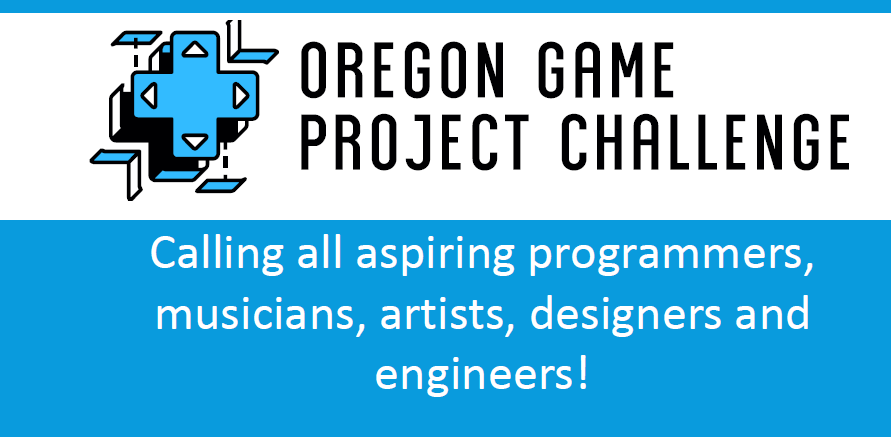
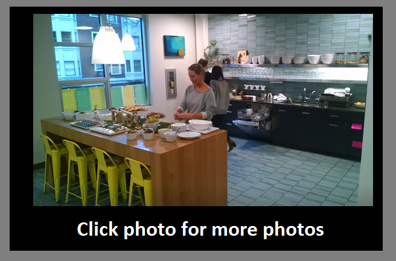

Game Jam Kickoff
Save the date: Saturday November 11th 9:45am
The kickoff starts 4 months of coding for the OGPC main event in March
Where: A Portland High School near you
How: Register
here
Why: Start building teams of 2-5 students for the OGPC game challenge
What is OGPC? Oregon Game Project Challenge. Students from all over Oregon go to Salem in the spring to showcase their games and projects. It's more of a gallery than a competition. The theme is announced at the gamejam kickoff. Click
here
for a gallery of the March final event

WIEDEN+KENNEDY CAREER DAY:
All about: CREATIVITY, DESIGN AND ADVERTISING? Visit Wieden+Kennedy!
Are you interested in a career that uses your creativity? Come to Wieden+Kennedy, the global ad agency behind Nike. Spend the morning talking with art directors, writers, project managers, media planners, producers, designers (visual, motion, UX/UI), engineers and account executives about what they do and why they love their jobs.
DATE: Thursday, November 16th from 9:00 am – 12:00 pm; check-in 8:45 am
There are two steps to complete the registration process for this career day:
1. Complete the online registration (link below)
ONLINE REGISTRATION
https://docs.google.com/forms/d/e/1FAIpQLSdpiLSSa5CGFo8Owdyb4O-52-yNQcmk05JKuWWXUq1x0V8g4g/viewform
2. Complete the paper application: Go to the College & Career Center (room SS- 216) to pick up the paper application and submit the signed/completed application to your Career Coordinator once it is completed.
Spaces are VERY limited. Don't miss out on this opportunity, register TODAY!
MERCY CORPS CAREER DAY
Join Mercy Corps staff at the Action Center for an active and eye-opening day exploring the strategies of international development. International development work is not your run-of-the-mill career. The pace is fast, the intellectual demands rigorous, the passion intense.
Students will hear about Mercy Corps careers and departments, learn about community development practices, engage in team activities, and design a program.
DATE: Wednesday, November 17th from 9:00 am – 2PM; check-in 8:30
There are two steps to complete the registration process for this career day:
1. Complete the online registration (link below)
ONLINE REGISTRATION
https://docs.google.com/forms/d/e/1FAIpQLSeRbZKHVYfYrQeuRvnTCEbI6Vo8sKt0QwUT05OfT9IQWhFhuQ/viewform
2. Complete the paper application: Go to your College & Career Center to pick up the paper application and submit the signed/completed application to your Career Coordinator (room SS-216)
Come to room SS- 216 (above the Cafeteria) to pick up an application TODAY, spots are limited!
The National Center for Women & Information Technology
APPLICATION DETAILS
Students can apply online below, no later than 11:59 p.m. Hawaii Standard Time (HST) on November 6, 2017.
ABOUT NCWIT
The National Center for Women & Information Technology (NCWIT) is a non-profit community of nearly 900 universities, companies, non-profits, and government organizations nationwide working to increase
girls'
and
women's
meaningful participation in computing
Recipients of the NCWIT Award for Aspirations in Computing receive engraved awards, scholarship and internship opportunities, entry to a peer-network of technical women in the NCWIT AiC Community, various prizes, and more. // Share this status with women in grades 9-12 who should
apply!
http://bit.ly/AiCHSAward #NCWITAiC18
Flyers:
About NCW and awards
NCW and the Oregon Region
The big event for national winners
The NCW Program
Chick Tech - Annual High School Kickoff
ChickTech is excited to host the annual High School Kickoff from October 28th-29th at the Maseeh College of Engineering at Portland State University! Every year, this inspiring weekend-long event gives over 100 underserved high school girls the opportunity to explore technology careers through hands-on workshops.
Interested in participating as a high schooler? Email the High School Liaison at
pdxhighschool@chicktech.org
to get your name on the list! Registration will begin September 25th.
Interested in volunteering? Sign up for volunteer shifts here:
https://signup.com/client/invitation2/secure/1967718/false?mc_cid=46cac72089&mc_eid=1573a2024e#/invitation
From: Jodi Darby
I'm writing to announce our upcoming POWGirls MUSIC VIDEO workshop Oct. 20-22nd.
Register here
http://www.powgirls.com/upcoming-workshops.html
We're excited to be teaming up with Open Signal, previously Portland Community Media to provide girls and non-binary youth ages 14-19 with a three-day music video production intensive.
Over one weekend, participants will produce an original music video while learning DSLR camera operation, audio recording, lighting and post-production using Adobe Premiere Pro. Students will work with music created by local musicians.
Please share this opportunity with your students. Also, please let them know that we do not turn participants away for lack of funds.
Participants can register here: MUSIC VIDEO WORKSHOP
More information can be found about POWGirls at
powgirls.com
Thank you- Jodi
JODI M. DARBY
POWGirls Education Director
Act now. In many cases these are first come, first served. The first step is a visit to Room SS216. That's where you get the paper forms from the college and career office.
AWS Elemental Career Day
Want to work at a cool Portland tech business? Visit the new offices of the city’s leading software company!
During AWS Elemental Career Day, you will:
•See the video technology used by Amazon, ESPN, Disney, Comcast and the Portland Timbers.
•Explore the diversity of jobs within a fast-growing tech company.
•Learn about the education and skills needed for a successful tech career.
DATE: Thursday, November 2, 2017 9:00 am – Noon
Open to 9th -12th graders. Applications are available in the Career Center, located in room SSS-216, right next to the Counseling Center.
There are two steps to complete the registration process for this career day:
1. Complete the online registration (link below)
ONLINE REGISTRATION
https://docs.google.com/forms/d/e/1FAIpQLSepUE6ZevxeGOZDGVpuW2RkjPjq59iFI4EZ2NitFk3t--UwSA/viewform
2. Complete the paper application: Go to your College & Career Center to pick up the paper application and submit the signed/completed application to your Career Coordinator ASAP.
Umpqua Bank Career Day
Go behind the scenes at Umpqua Bank, a successful bank founded in Oregon. Meet professionals in technology, marketing, finances, and commercial banking.
Explore the diversity of jobs within the finance industry and learn about the education and skills needed for a successful career.
DATE: Friday, October 27 from 9:00 am – 1:30
Open to 9th -12th graders. Applications are available in the Career Center, located in room SSS-216, right next to the Counseling Center.
There are two steps to complete the registration process for this career day:
1. Complete the online registration (link below)
ONLINE REGISTRATION
https://docs.google.com/forms/d/e/1FAIpQLSfGRtlP0lC-bBOn_TVTzi-i5e8g9pAvlgIfxAjKJgtYFZgOpg/viewform
2. Complete the paper application: Go to your College & Career Center to pick up the paper application and submit the signed/completed application to your Career Coordinator ASAP.
OregonLive .. The Oregonian Career Day Registration
Students will learn about careers in journalism, communications, and media. Visit The Oregonian/OregonLive and meet journalism professionals. Get a behind-the-scenes look at the largest media company in Oregon. Explore how the pros use video and photography to tell stories. Do engaging activities, including a mock press conference. Learn about the skills and education needed for a career in communications.
DATE: Friday, October 20th from 9:00 am – Noon
Open to 9th -12th graders. Applications are available in the Career Center.
There are two steps to complete the registration process for this career day:
1. Complete the online registration (link below)
https://docs.google.com/forms/d/e/1FAIpQLScaVLyV5ibIUV9iWUWUIA3SDxDxJqNukEFknYHM4zgxR_G23w/viewform" rel="noopener noreferrer
2. Complete the paper application:
Go to your College Career Center to pick up the paper application and submit the signed/completed application to your Career Coordinator.
Future Educator Career Day
Go behind-the-scenes at a Portland elementary school to learn about rewarding careers in education. Learn about lesson planning,then help lead a read-aloud activity with a class. Talk with caring professionals in careers such as teacher, counselor, principal, speech pathologist, about their jobs and educational paths. Hear about local college pathways from college representatives. (Portland State, Warner Pacific and Concordia universities are invited).
DATE: Thursday, October 26th from 8:30 am – 10:45 am
Open to 9th -12th graders. Applications are available in the Career Center.
There are two steps to complete the registration process for this career day:
1. Complete the online registration (link below)
https://docs.google.com/forms/d/e/1FAIpQLSfYIKmAmpKezF2lt7zxj6X9hZ2mN5M5uZHYY0Ws0BWp9QaCfA/viewform" rel="noopener noreferrer
ONLINE REGISTRATION
2. Complete the paper application:
Go to your College Career Center to pick up the paper application and submit the signed/completed application to your Career Coordinator.
Multnomah County IT + Cyber Security Careers Day
Learn about tech careers at Multnomah County! Go behind-the-scenes in local government, where core tech responsibilities include fending off hackers, managing sensitive information, and developing apps . Learn what Multnomah County does and talk with their IT professionals about a career path that blends tech savvy with public service.
DATE: Wednesday, November 1st from 9:00 am – Noon
Open to 9th -12th graders. Applications are available in the Career Center.
There are two steps to complete the registration process for this career day:
1. Complete the online registration (link below)
Fill out this form, URL below
https://docs.google.com/forms/d/e/1FAIpQLScmutG_Tkje455T_Gu8bcREySv8gOeZi4whWBZLqo9LR9-L3g/viewform" rel="noopener noreferrer
2. Complete the paper application: Go to your College Career Center to pick up the paper application and submit the signed/completed application to your Career Coordinator.
Codette - Programming Workshop! For young women
Free workshop on music and code.
new time: 3pm to 6pm August 15th-16th-17th
new location: Lincoln High School Downtown Portland Oregon
Portland State University
Aug 11th,12th,13th time: 3pm to 6pm August
Seeking young women grades 8-11 for Science Technology Engineering and Math (STEM)
My name is Elaine Yang and I am a student at Lincoln High School. I, along with my friend Kelly Han, plan on running a technology camp at Lincoln High School called Codette in partnership with a 4H organization called Tinker Camp over the summer. We are both passionate tech advocates for STEM (science, Technology, engineering, and math) Technology is so prevalent these days that we want to encourage more girls to participate in the fields of STEM. We want to address 8-11th grade girls, regardless of experience (we welcome everyone as long as they have passion and enthusiasm ;), and we were hoping we could get your students involved in this opportunity to introduce more girls into the world of programming and technology. It is a completely free program, food is provided, and the students will learn how to make music with code using Python. We want to provide an opportunity for girls to get involved with STEM, and in a comfortable environment, and we hope you will help us spearhead this goal as there are just simply not enough girls represented in STEM!
We are looking for a maximum of 15 girls and we serve on a first come first serve basis!
Here is a google form they can fill out if they would like to join:
https://goo.gl/I7phJF
Website with more information
https://jkellyhan.wixsite.com/tinkerclub
contact us at
elaineyangx attt gmail.com
jkellyhan atttt gmail.com
Sincerely,
Elaine Yang and Kelly Han
Lincoln High School
Student code showcase at Portland State.
Location: The brand new Portland State building called the Maseeh College of Engineering and Computer Science.
This is the CS & Digital Literacy for All Symposium. It's a showcase of students and projects.
Where: 1930 SW 4th Ave , Portland, OR 97201
When: Saturday, June 24th 10:30-11:30. During that time, the symposium attendees will be circulating through the showcase area speaking with the students. Each group will have a table for their display. The site has wifi. We will need to know each groups' electricity requirements as well as anything additional they will need in terms of power or space.
Website:
http://oregoncsta.org/2017-summer-superquest/2017-oregon-csta-symposium/
How to join?
a) send email with your phone number to Mr. Randy Macdonald
b) Register on this page click
here
Click here to email randy@taof.org
Randy Macdonald
Program Manager
Innovation Academy
randy@taof.org
(541) 704-7239
Program Manager
SuperQuest 2017
Oregon Computer Science Teachers Association
randy@oregoncsta.org

$625 Coding Courses in Downtown Portland
Partial scholarships are offered.
Click
here
to apply.
411 NW Flanders St, Ste 100, 97209 Portland, United States
map
register here
The Oregon Story Board is excited to announce our Intro to Virtual and Mixed Reality Summer Courses that focus on UX Design, 3D Design and Programming. We want to make sure that PDX educators and students have access to the unique educational opportunities here in PDX.
Our classes provide a hands-on learning environment where anyone can explore and learn the different aspects of VR production. With this custom-designed curriculum, we continue to support Portland’s current VR/MR community to and help inspire a new generation of diverse VR & MR producers.
Summary and Important Dates
Intro to UX Design for VR & MR
June 8-July 13 Thursdays from 9:00AM - 2:00PM
Students will explore and develop basic elements of VR/MR UX design best practices and also create UX documentation for VR/MR projects from problems to solutions.
Intro to 3D Asset Creation for VR & MR
June 9-July 14 | Fridays from 1:00PM - 6:00PM
Students will gain an understanding of the history and future of VR/MR and its potential use in a variety of industries and learn the basics of 3D art creation using Autodesk Maya and Unity.
Intro to VR & MR Programming
June 10-July 15 | Saturdays from 9:00AM - 1:00PM
Students will learn the basic history of VR/MR development and an introduction to Unity and C#.
Click here for the flyer.
If you have any questions or feedback, please don’t hesitate to contact me. We would love to support our PDX educators and students.
Best,
Amy Thole
Oregon Story Board
amy@oregonstoryboard.org
Follow us on Facebook
older items are below..... ........ ............. ....... ......
You are invited on our field trips.
Free Geek May 9th. See Mr. Rowe for forms
PPS High School Code Showcase. May 24th. Register here >
here.
Each year, the Mythos Challenge invites Oregon youth to create a digital app, story, or game. The Mythos Challenge is led by the Mythos Youth Council with the goal to inspire their peers to become digital innovators and creative thinkers. We’re opening enrollment for the Mythos Youth Council that leads and organizes the Mythos Challenge.
Join us to learn what it takes to be on the Mythos Youth Council on Sunday, May 21st, from 1-3PM! The Mythos Youth Council is a great opportunity for students in grades 8-12 to become leaders in digital innovation, youth voice, and community change.
Learn about how you can join the Mythos Youth Council:
Who: Students in grades 8-12
What: Meet the Mythos Youth Council and learn about what it takes to join!
When: Sunday, May 21st, 1-3pm
Where: Portland Art Museum, Stevens Room
Eat: Free pizza and drinks!
Play: Explore digital games, stories and apps that won top awards in prior Mythos Challenges!
Questions: Email us at mythoschallenge.com
RSVP Online:
https://www.eventbrite.com/e/meet-the-mythos-council-tickets-33401664277
Website: http://www.mythoschallenge.com
Apply to join Mythos Youth Council: May 21 - June 3rd. You do not need to attend the Mythos Youth Council event on May 21 in order to apply. Please check the website after the event to view the application.
Newsletter
http://mailchi.mp/062853d3a835/save-the-date-join-the-youth-council-may-5
Are you aware that all PCC students enrolled in classes for credit have access to free online tutoring services? This includes your registered Dual Credit students! Online tutoring offers weekend and evening hours for an extensive list of subjects. Please encourage students to check the weekly schedule and explore our support information online at www.pcc.edu/etutor.
Taking AP classes. Nice work, but it's hard on you so read up on deadlines
here
https://docs.google.com/viewerng/viewer?url=http://www.pps.net//cms/lib8/OR01913224/Centricity/Domain/45/APExamCalendarSchedule.pdf
Invention Bootcamp is an intensive education experience for high school students.
It is led by PSU faculty, Dr. Nathalie Neve and undergraduate engineering students. Students learn basic skills to develop a prototype by completing class-wide projects. In parallel, students apply these skills to creating their own invention. At the end of Invention Bootcamp, students present their invention to the public.
Camp Highlights include:
4-week bootcamp from 10am - 3:30pm summer weekdays under guidance of PSU faculty and students
June 26, 2017 - July 21, 2017
Build relationships with college students and program mentors
Training in engineering software, computer programming, microcontrollers and electrical circuits
Training in common engineering tools
Design and fabricate own invention
Weekly guest speakers
Onsite visits to business and maker spaces
https://www.pdx.edu/cecs/invention-bootcamp
Deadline May 5
From: Katy Tripses katelyn@studysoupnews.com
StudySoup is offering a $1000 Women in Technology student to one female student who is interested in pursuing a career in computer science. We want to make sure your students don't miss their chance to apply!
We want as many students as possible to apply and need your help to make that happen! If you know any students that might be eligible for this, please post our link and encourage them to apply!
Scholarship link:
https://studysoup.com/women-in-technology-scholarship
Have a great day!
Katy
From Mr. Souza, ( Video edting teacher) During the summer I serve as Camp Director for Allies Film Camp which is a camp hosted by an agency in town named Juliet Zulu where students get the opportunity to work with professional writers, directors, producers, and actors to create a film. Last year I was so proud of the seven high school students who participated and were able to write, plan, shoot, and edit their own films in one week. Last year's participants from Franklin included:
Bridghid O'loughlin - Blind Date
Django Boletus and Cadie Godula - The Favor
Emma Hicks - The Pancake Bandits
Click on the links above to see the three amazing films they made.
Anyway....WE ARE DOING IT AGAIN! Registration has just opened up and will be open until May 1st. If you have any kiddos who you think may be interested let me know.
Please visit the 2016 website to see our highlight video and gain more info about the camp.
Students can register at this link.
Take care. See you soon!
Girls only Cyber Camp or Co-ed camp - High School students,
a) This is strictly non-profit and volunteer driven, founded by students and parents from Lincoln.
b) It’s a week-long camp in three locations, this summer, the week of July 17th. The camp at Lincoln is “girls only” this year.
c) Fees can be waived for students based on financial need.
d) It’s hands-on curriculum, including computer labs and a competition on the last day
e) We’ll have a bunch of industry expert presentations from major cybersecurity companies, in addition to our curriculum.
f) No prior cybersecurity or programming experience required!
We have a lot of industry support in part because industry is so hungry to fill these positions. Here’s a nice piece that ran on the Portland business journal this week about the camp.
http://www.bizjournals.com/portland/news/2017/03/29/pdx-cyber-camp-is-back-this-year-to-jumpstart.html
We’re about 1/3 of the way full so far, and registration is open until end of April.
You can read all about it here,
http://www.softwarediligence.com/pdxcybercamp/
Flyers:
Flyer Girls Camp
Flyer Coed Camp
Flyers MS Word Plain
Best regards,
Charlie Kawasaki, CISSP
Tiny Logo
Software Diligence Services | Best: 503.616.4767 | Cell: 503.806.1484 | ck@softwarediligence.com
Coding Camp at PSU from July 24th to Aug 11th. 9am-3pm
http://nwapw.org/faq/
Mr. Rowe signs you up. There is no forms to fill out. Just ask Mr. Rowe to send in your name. NWAPW is an intensive three-week program for students who are highly motivated in coding and computer science and want to work with other students in Portland High Schools who crave more than just High School coding lessons.
When does the program run?
Three weeks from July 25 through August 11, 2017, weekdays from 9:00 until 3:00 with a break for lunch. There will also be two meetings, one in late April and another in mid May where we will select the projects for this year.
Where does the program take place?
The Computer Science department at Portland State University. Downtown Portland just off the Green and Orange Max lines, also near the bus mall. It's just a 20-35 minute trip from anywhere in Portland on TriMet
How much does the program cost?
The program is completely free of charge.
COLLEGE & CAREER REAL LUNCH TALKS!
Debunking the Myths of College + Real talk from Real college students + First Generation + The Real College Experience + Special Guest Speakers + Thriving on a College campus + Sexual Assault on campus + + College Journey Framework+ Two and Four-year Colleges+Celebrating Culture in College+much more
Join GEAR UP CAM’s and your peers as they engage in real dialogue about succeeding in college. Join us for college student panels, guest speakers, and college related conversations!!!!
WHEN: March 8th, Wednesday during lunch
WHERE: College and Career Center
INVITE YOUR FRIENDS!
LUNCH PROVIDED!
COMPLETE A CRLE
ALL GRADES WELCOME
CONTACT MR.SCHER THE GEAR UP COORDINATOR FOR MORE INFORMATION.
mscher@pps.net OR VISIT ROOM B18-A
Michael Scher
Franklin High School Coordinator
GEAR UP
Portland Public Schools (503)730-7014
The University of Oregon in collaboration with Portland Public Schools, and the Black United Fund of Oregon invite ALL African American students grades 6th through 11th and their parents to the Opportunities program tonight, Thursday, April 13 from 5:30 to 7:30 pm at Jefferson High School.
 This is a great opportunity for students to get answers to their questions about the college preparation process including ways to build their student profile for admissions and scholarship purposes. Students from all schools and school districts are welcome.
This is a great opportunity for students to get answers to their questions about the college preparation process including ways to build their student profile for admissions and scholarship purposes. Students from all schools and school districts are welcome.
Students will learn about grades and deadlines and their role in the process as a whole. Parents will have the unique opportunity to learn how to support their students to pursue higher education and get answers about their questions and concerns related to college and paying for it. All attendees will have the opportunity to connect with University of Oregon students from similar backgrounds and hear about their college experience.
A free light dinner will be provided. We look forward to seeing you on Thursday, April 13 and please contact Nicole Dalton at 503-916-5180 Ext. 78513 or Antonio Huerta at the University of Oregon at 541-346-1067,
opportunities@uoregon.edu
with any questions.
Hope to see you there!
Student Career Expo March 14th
Field trip form for parents and students click here. Students will have a chance to participate in mock interviews, learn about college programs & more. Students are invited to participate in the NW Careers Expo with more than 100 employers and exhibitors providing essential career information. Students will learn about opportunities in Business, Health Services, Technology, Arts, Manufacturing, Construction and Natural Resources.. Participating in the NW Careers Expo counts as CRLE (Career Related Learning Experience) toward your diploma requirements. The expo website is here .
Are you a 9-11th grader? Are you interested in a career as a scientist, doctor, engineer or technologist? Then you should consider applying to the ASE [PRONOUNCED ACE if read aloud] summer internship program. ASE matches scientists, engineers and technology innovators with smart students like you for 8 week internships over the summer. ASE is a great way to improve your college application, and students can get school credit and a $1,000 stipend! More information is available at www.saturdayacademy.org/ASE.

computing Model internship PSU
Encryption and safeguarding intern PSU
Security Games Internship PSU
IBM linux development
March 22nd. WeAreFine.com - Job Shadow opportunity for 2 FHS students
https://docs.google.com/forms/d/1KHtdM-a42eewzCotsBwHNr4bovHoCZ17kNvvK1JloZo/viewform?edit_requested=true

FINE is a brand agency, working uniquely in the digital space with customers in wine, hospitality, finance, architecture, technology and more. We have an award-winning office in downtown Portland, full
of nice strategists, marketers, designers, producers, writers and developers doing great work.
We have regular opportunities to host a student
to spend the day with designers, developers and other tech professionals working in the digital field and on the web.
Job Shadow info: Click here
Clay Walsh
503.243.3463 x7264
1140 SW 11th Avenue #200, Portland, OR 97205
www.wearefine.com
Pass this along to any of your students who might be interested - I hear it's really good. Wu-chang Feng, the professor in charge, is really good. It's free, and comes with lunch!
https://oregonctf.org/
Are you a student interested in computer programming, using data, or healthcare ?
The DIME HS Career Day at Kaiser Permanente provides an exclusive opportunity to introduce careers in Business Intelligence and Analytics to high school students exploring a day in the life of a Data and Information Management Analyst. Students will enjoy a day filled withworkshops, interactive games, networking and teambuilding.
WHAT IS DIME?
DIME stands for Data & Information Management Enhancement. DIME oversees how the Kaiser Permanente northwest region collects, organizes, and utilizes information. They take the region’s diverse data and transform it into actionable information to enable decision making and goal setting.
INTERESTED?
Only 12 students from around Portland will be invited to this event, so hurry to apply!
- Student must be 9th-12th grade (at least 14 years of age)
- Complete application packet including parent signature. (Application packets are available in the College and Career Center)
DIME HIGH SCHOOL CAREER DAY
TUESDAY, FEBRUARY 21ST, 2017
8:30 AM – 1:30 PM
Take advantage of this great Job Shadow Opportunity! Registration is available in room B-6.
Make+Think+Code Launch Party at Pacific NW College of Art (PNCA)
Friday, Feb. 17, 5-7pm
https://www.eventbrite.com/e/makethinkcode-launch-party-tickets-31524085388
PNCA is proud to announce the opening of Make+Think+Code, a technology-focused lab, research studio, and institute at the intersection of art, design, science, and technology that brings together students and professionals to invent and innovate.

Paid software internships at CDK Global: The Portland office of CDK Global intends to hire at least 10 high school interns for the summer of 2017, through a eight-week program called Code 2 Career. All eligible students are welcome, and they "strongly encourage women and under-represented minorities to apply." For more information, click here: How to apply: To apply for this program please email Dianna Chourarath, CDK Campus Recruiter at dianna. chourarath@cdk.com Students may apply by emailing a resume and brief cover letter directly to D. Chourarath. Students who apply by Feb. 28 will be given early consideration, though CDK will continue accepting applications in March. Tip: In the cover letter, students should share why they’re interested in the internship, confirm that they are juniors on track to graduate in 2018, and list any computer science classes they have taken. http://www.portlandworkforcealliance.org/cdk-global-to-hire-10-portland-area-high-school-students-for-paid-summer-software-internship/
Attention all Juniors and Seniors
Interested in visiting SOU (Southern Oregon University)? Thinking of applying? Already applied?
Join other GEAR UP students at SOU for the:
SOU Preview Weekend
The SOU Preview Weekend will introduce you to the many reasons Southern Oregon University is such a special place. Tour campus and the residence halls, meet with faculty and students, Have fun, explore resources and facilities, dine on campus, and spend the night in the residence halls, and much more.
Leaving: Friday, January 10
Returning: Saturday, January 11
(This will be an overnight trip)
All costs will be covered
Space is limited!
Visit the GEAR UP Office (Room B18-A) today to pick up your trip registration packet today!!
**All registration must be completed and turned in to Mr. Scher, GEAR UP Coordinator no later than January 30 , 2017
For as little as an hour of your time you could walk away
with enough to pay your tuition, fees, and more. Take a little time over break
to apply for one or all of the following:
Future Connect scholarships
PCC Foundation scholarships
Oregon Promise
OSAC scholarships
FAFSA or ORSAA (required if
you are interested in any of the above scholarships or grants)
At PCC we award over $2 million in PCC Foundation Scholarships and Future Connect scholarships.
To apply for PCC and Future Connect scholarships you will
need to have applied to PCC and have your student G-number.
If you need assistance accessing your G-number, call 971.722.8888
(option 2) during regular business hours.
Polina Pozdina
Portland Community College
Outreach and Orientation
971-722-6348
Contact me if you have questions. I'm happy to help
you and look forward to having you here at Portland Community College
in the future!
Women in Tech
Oregon's First Student Run Women in Tech Conference
The Tech Together Conference is on February 25th at U of O. Eugene
It's the first of it's kind, and there will be mentors and industry women who are looking to support young women interested in Computer Science. Microsoft, Google, and several other organizations will have representatives contributing and speaking. Being the first, this could be a really positive thing for our young women to meet people.
If an attendee wants to apply for a scholarship to attend, the application date is January 25th - Wednesday of next week. Note that this event is open to both boys and girls -- it's just a female-focused event.
For more information, contact Jan Boley (jan@ogpc.info)
or visit the web site:
http://www.techtogetheroregon.com
ELEMENTAL TECHNOLOGIES
DATE: Wednesday, February 15, 2017 (9:00 AM to NOON; Check in 8:45am)
Want to be a tech entrepreneur? Interested in careers in technology or business? Visit one of Portland’s leading software companies.
--See how a former PPS student became Oregon’s tech CEO of the year.
--Explore what’s involved in building your own business.
--Try out coding, marketing, product-testing and managing finances.
--Learn about the education and skills needed for a successful tech career.
--See the technology powering videos used by ESPN, Disney, Comcast and MLB!
--Fast fact: The average software/IT job in Portland pays $94,200 a year.
THIS IS A 2-PART APPLICATION PROCESS:
1. Complete the online registration (link here)
https://goo.gl/TYiGYp
2. Come to room B6 to pickup the paper application: Go to your College & Career Center to pick up the application and turn it back to your Career Coordinator once is completed (must include student, parent/guardian signatures)
Spaces are limited. Register TODAY!
Swift
Career Day
Curious about marketing, advertising, business careers?
SWIFT CAREER DAY
DATE: Wednesday, February 22, 2017 (9:00 am to noon)
Are you interested in marketing, advertising, business careers? Then come to SWIFT CAREER DAY! Spend the morning at Swift, one of Portland’s fastest growing creative advertising agencies. Students will tour the office, including their content studio where they stage photos and videos, and talk with creative professionals such as art directors, writers, strategists, designers and account executives about their jobs and career paths. Students will break into small groups with Swift employees to work on client pitches. They will hear from the hiring team about personal branding and what agencies like Swift look for in applicants. Swift’s clients include Starbucks, Google, Adidas, and Pandora.
There are TWO STEPS to complete the registration process for this career day.
1. Complete the online registration (link here)
https://goo.gl/aYQKhx
2. Visit B6 to get a copy of the paper application: Go to your College and Career Center to pick up the application and turn it back to your Career Coordinator once is completed (must include student, parent/guardian signatures Spaces are very limited. Don't miss out on this opportunity, register TODAY!
Free College money- Tech Scholarship
Please share this opportunity with your counselors and technology teachers. The Association of Computer Professionals in Education (ACPE) has allocated up to $10,000 for scholarships of up to $2,500 each for graduating seniors in Oregon and Washington who have been actively involved in the use of technology during their high school careers and are planning to pursue studies in a technology-related field.
In order to qualify, a student must:
• currently be a graduating senior at an Oregon or Washington K–12 public or private educational institution
• have demonstrated high interest and innovative use of technology during their high school career
• have demonstrated some community/school involvement, preferably with a technology focus
• plan to pursue studies in a technology-related field to obtain the minimum of a two-year degree
• have created a simple website describing their own technology project and including links to evidence for that project. The evidence should be accessible via a standard browser and should not require installation of any additional software.
• have completed the online Scholarship Application
To be considered, all components of the application must be submitted before 5 p.m. on March 1, 2017. More information including a link to the online application can be found here: http://www.acpenw.org/scholarships
Questions can be directed to: scholarship@acpenw.org. Marita Ingalsbe, Director, IT Client Services & Partnerships x63136 ingalsbe@pps.net
Raquel Laiz
College and Career Coordinator
Franklin HS
rlaiz@pps.net
========== older trips are listed below for historical sake
Kaiser Permanente DIME Job Shadow Day: Are you interested in exploring a career in Health Care and Information & Technology? Kaiser Permanente is hosting a Data & Information Management Enhancement (DIME) Job Shadow Day - where students will get a behind-the-scenes look at Kaiser Permanente through their DIME Department, to look at how important a DIME Analyst is to Kaiser Permanente and the patients they serve. DIME Job Shadow Day is an exclusive opportunity to introduce careers at Kaiser Permanente in IT and Data Management to high school students by exploring a day in the life of a Data and Information Management Analyst. Students will be provided with breakfast & lunch, and receive a certificate of completion at the end of the day. The program will take place on Wednesday, November 9th, 2016 from 8:30 AM to 1:30 PM at the Kaiser Permanente Building. Only 12 students from around Portland will be selected to participate in the program, so hurry to apply! Requirements: •Students must be 9th-12th grade (at least 14 years of age) •Students must complete all application packet documents and return them to your Career Coordinator no later than Monday, Oct. 31st at 4:00 PM. Any incomplete and late applications submitted will not be considered. Take advantage of this great Job Shadow Opportunity! Application forms are available in room B-6
Wieden+Kennedy Career Day
All about: CREATIVITY, DESIGN AND ADVERTISING?
Visit Wieden+Kennedy!
Come to Wieden+Kennedy, the global ad agency behind Nike. Spend the morning talking with art directors, writers, project managers, media planners, producers, designers (visual, motion, UX/UI), strategists, engineers and executives about what they do and why they love their jobs.
Date: Wednesday, November 16, 2016
There are two steps to complete the registration process for this career day:
1. Complete the online registration (link below)
https://goo.gl/forms/WJ7GR51xEM5VGzj73
ONLINE REGISTRATION
2. Complete the paper application: Go to your College & Career Center to pick up the paper application and submit the signed/completed application to your Career Coordinator once it is completed.
Spaces are very limited. Don't miss out on this opportunity, register TODAY!
CDK Global Code2Career high school internship
Interested on tech careers? Looking for a real paid summer internship? CDK Global Code2Career is committed to providing internships for high school students to increase their passion for technology while challenging boundaries in computer science, innovation and teamwork.
Students will work with CDK Global engineers to program for various software projects, develop new features on their platforms, and gain exposure to real world applications. Interns will get an inside look at some of CDK Global’s most exciting, emerging technologies, and have the chance to create their end-of-internship project and present it to the leadership team.
Requirements:
High school juniors or seniors
3.0+ cumulative GPA
A great attitude, drive to learn, innovate and be creative
The ability to work full time, 40 hours per week, for 8 weeks starting in June of program year.
To apply for this program please email Dianna Chourarath, CDK Campus Recruiter at dianna.chourarath@cdk.com. If you want more information about this paid internship go to your College & Career Center to pick up the info flyer.
Raquel Laiz
College & Career Coordinator
Franklin HS
rlaiz@pps.net
Older career trips from the past are below
ZGF Architects Career Day (October 4th): ZGF, the largest architectural firm in Oregon is opening its doors for the ARCHITECTURE CAREER DAY! If you are interested in Architecture, Landscape Architecture, Interior or Urban Design, this is your opportunity. Students will learn about the architecture industry, tour the ZGF offices, participate in a tour to look at various building styles in downtown Portland, and participate in a team activity to design a school. This opportunity is for all students! But space is limited - apply today! Registration is available in room B6 For more information click here
Simple.com Career Day (October 6th): Careers: Online banking, technology, business, entrepreneurship. Spend the morning at Simple. It will be your opportunity to: •Learn how a Portland business disrupted the banking industry by appealing to younger, tech savvy consumers. •Go behind the scenes at their new inner eastside offices and talk to people in business, software, finance and marketing. For more information or to register come to room B6 TODAY!
AERO ACADEMY AVIATION CAREER DAY Date: Tuesday, October 18 from 9:30 am to 12:15 pm. Open to sophomores, juniors and seniors! HILLSBORO AERO ACADEMY AVIATION CAREER DAY is a great opportunity for students interested in learning more about these careers: Airline Pilot, Helicopter Pilot, Flight Attendant, Aviation Management, etc. Students will learn about careers, educational opportunities and see a variety of airplanes and helicopters on site at the Troutdale Airport. The event is free; registration is now open! Come to room B6 to apply today!
MERCY CORPS CAREER DAY DATE: Thursday, October 13 from 9:00 am – 2:00 pm; check-in 8:45 Students will hear about Mercy Corps careers and departments, learn about community development practices, engage in team activities, and design a program. Mercy Corps is a global aid agency engaged in helping people that have experienced some sort of shock: natural disaster, economic collapse, or conflict. Mercy Corps helps more than 16.7 million people each year recover from disasters, build stronger communities and find their own solutions to poverty. Come to room B6 to pick up an application TODAY, spots are limited!
TECHNOLOGY CYBER SECURITY AT MULTNOMAH COUNTY DATE: Wednesday, October 12 from 9:00 am – noon; check-in 8:30 Go behind the scenes in local government, where core tech responsibilities include fending off hackers, managing sensitive information, and developing handy apps for citizens and customers. Come see what Multnomah County does, and how they do it with technology that they oversee and support. Talk to Portland professionals in IT and network security about a career path that blends tech savvy with public service. There are two steps to complete the registration process for this career day. 1. Complete the online registration (link below) ONLINE REGISTRATION http://goo.gl/forms/KkzFDAZNBzOGW4GL2 2. Complete the paper application: Go to your College & Career Center to pick up the application and turn it back to your Career Coordinator once is completed, (or click on the link below to print out your paper application). PAPER APPLICATION https://goo.gl/qxltAy
Thanks, Raquel Laiz College & Career Coordinator Franklin HS rlaiz@pps.net
Tags code. Douglas Engelbart is a FHS graduate. he invented the mouse and HTTP